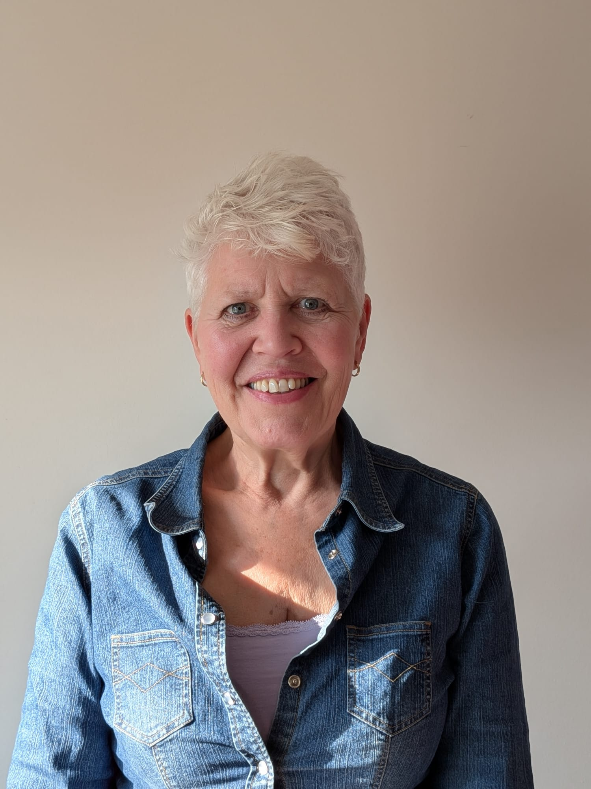
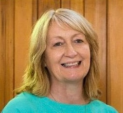

About Us

Nell Skinner- Speech and Language Therapist
Hi I'm Nell! I am a qualified Speech and Language Therapist dedicated to helping children achieve their communication goals. Since qualifying from Newcastle University as a Speech and Language Therapist in 2018, I have worked across both NHS and private settings and now I am working as an independent therapist. My goal is to offer tailored therapy sessions in a supportive and friendly environment to help your child achieve their communication goals.

Sue Skinner- Occupational Therapist
Hi I'm Sue, I qualified as an occupational therapist in 1984 and specialised in paediatrics working with children and young people aged between 0 and 19 with a wide variety of challenges to their health and well-being some of which include coordination, hyper-mobility, neurological conditions, pain, rheumatology, oncology, trauma and sensory processing difficulties. Experience was gained whilst working in a variety of settings including specialist nurseries and schools, the community, GP practices and hospitals over many years in various roles including specialist service lead for autistic spectrum conditions and learning disabilities and managing and supporting therapists clinically, operationally and professionally in the NHS. In January 2022, whilst continuing my work with children I also took a part time post in supporting adults with challenges to their health and well-being to return and remain in work working as a case manager in occupational health. In this role I use my skills to support people with conditions such as long Covid, anxiety and depression, musculoskeletal conditions, fibromyalgia, neurological conditions, neurodiversity, trauma and other medical and surgical conditions. In my many roles I have undertaken comprehensive assessments and report writing, the coordination of services and multi-disciplinary, multi-organisational working, which often included working with case managers and solicitors to achieve the best outcomes for my patients/clients.

Claire Webb- Occupational Therapist
Hi, I'm Claire, I am a Gloucestershire based Specialist Children's Occupational Therapist and Advanced Sensory Integration Practitioner, with over 25 years experience of working in the field of occupational therapy. I am committed to supporting local families in accessing affordable, evidenced based holistic occupational therapy. I work with children and young people aged from 2.5 to 19 years old in their homes, nursery’s, schools, alternative educational settings and colleges providing assessments with reports including recommendations and strategies, as well as individualised therapy sessions. My services also include the provision of specialist occupational therapy and sensory processing training for education, health and care professionals. I also provide clinical supervision or mentoring for occupational therapists and sensory integration practitioners.